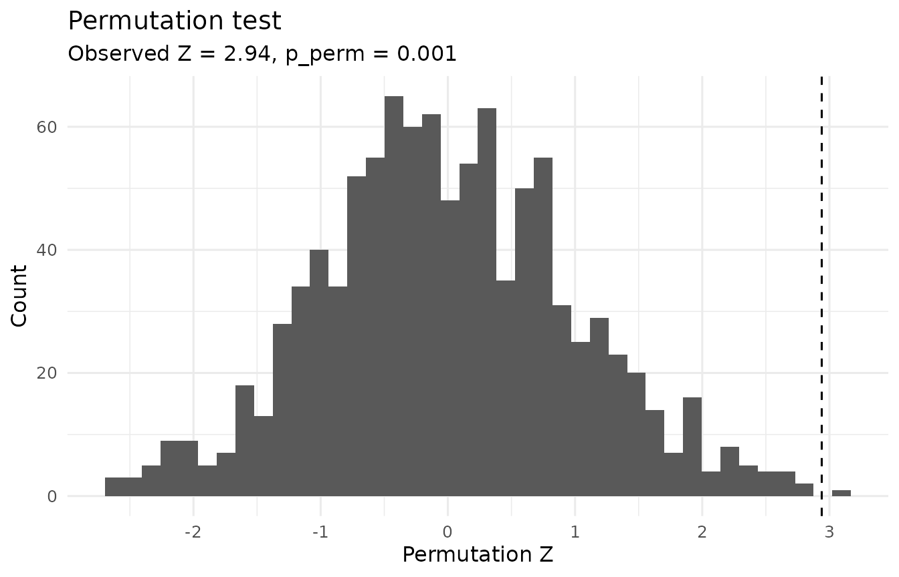

A unified approach
The Solomon four-group design is often introduced through a sequence of separate analyses.
A modern alternative is to represent the four-group design in a single model and estimate the scientifically relevant questions as explicit contrasts.
For a continuous posttest outcome, the core model in
solomonR is
where:
- indicates treatment assignment;
- indicates whether a participant was pretested;
- represents pretest sensitization; and
- incorporates the pretest information available in the pretested groups.
solomonR then estimates four predefined Solomon
contrasts from this model.
Structural missingness of the pretest
One unusual feature of the Solomon design deserves special attention.
Participants in Groups 3 and 4 were deliberately not pretested. Their absent pretest values are therefore structurally missing by design.
Simply placing the raw pretest variable into an ordinary regression formula can cause complete-case deletion of Groups 3 and 4, destroying the four-group design.
fit_solomon_glm() avoids this problem internally. For
the optional pretest covariate, the model uses the observed pretest
score among pretested participants and a design-safe value among
participants for whom the pretest was never administered.
The pretest indicator remains in the model, so this coding does not pretend that Groups 3 and 4 actually had baseline scores of zero.
Example data
library(solomonR)
data(solomon_example)
demo_preview <- head(
solomon_example,
6
)
demo_preview$y_post <- round(
demo_preview$y_post,
2
)
demo_preview$y_pre <- round(
demo_preview$y_pre,
2
)
knitr::kable(
demo_preview,
align = "rrrr"
)| y_post | treat | pretested | y_pre |
|---|---|---|---|
| 60 | 1 | 1 | 55 |
| 71 | 1 | 1 | 42 |
| 58 | 1 | 1 | 58 |
| 54 | 1 | 1 | 34 |
| 57 | 1 | 1 | 42 |
| 45 | 1 | 1 | 38 |
Fit the model
The unified model with HC3 heteroskedasticity-consistent covariance, the default, is a sound starting point for continuous outcomes.
fit <- with(
solomon_example,
fit_solomon_glm(
y = y_post,
treat = treat,
pretested = pretested,
pretest_score = y_pre,
robust = "HC3"
)
)
fit## Solomon GLM (unified model)
## Formula: y ~ treat * pretested + pre_obs
## Covariance: HC3 heteroskedasticity-consistent; t tests (df = 115)
##
## Term Est (SE) t df p 95% CI
## (Intercept) 51.100 (1.739) 29.39 115 <.001 [47.656, 54.544]
## treat 3.633 (2.229) 1.63 115 0.106 [-0.782, 8.049]
## pretested -26.219 (5.957) -4.40 115 <.001 [-38.019, -14.418]
## pre_obs 0.598 (0.101) 5.91 115 <.001 [0.397, 0.798]
## treat:pretested -1.940 (3.168) -0.61 115 0.541 [-8.214, 4.335]
##
## Key contrasts Est (SE) t df p 95% CI Wald R2
## ATE (avg over pretest) 2.663 (1.584) 1.68 115 0.095 [-0.474, 5.801] 0.024
## Pretest x Treatment -1.940 (3.168) -0.61 115 0.541 [-8.214, 4.335] 0.003
## Treatment | pretested 1.693 (2.251) 0.75 115 0.453 [-2.765, 6.152] 0.005
## Treatment | unpretested 3.633 (2.229) 1.63 115 0.106 [-0.782, 8.049] 0.023
##
## Wald R2: partial R-squared for conventional Gaussian OLS;
## a Wald-based descriptive approximation when robust covariance is used.The output contains model coefficients followed by the four principal Solomon contrasts.
The contrasts can also be accessed directly:
effects_display <- fit$effects[
,
c(
"contrast",
"estimate",
"std.error",
"statistic",
"p.value",
"r2"
)
]
effects_display$estimate <- sprintf(
"%.2f",
effects_display$estimate
)
effects_display$std.error <- sprintf(
"%.2f",
effects_display$std.error
)
effects_display$statistic <- sprintf(
"%.2f",
effects_display$statistic
)
effects_display$p.value <- ifelse(
effects_display$p.value < .001,
"< .001",
sub(
"^0",
"",
sprintf(
"%.3f",
effects_display$p.value
)
)
)
effects_display$r2 <- sub(
"^0",
"",
sprintf(
"%.3f",
effects_display$r2
)
)
names(effects_display) <- c(
"Contrast",
"Estimate",
"SE",
"t",
"p",
"Wald R2"
)
knitr::kable(
effects_display,
align = c(
"l",
"r",
"r",
"r",
"r",
"r"
)
)| Contrast | Estimate | SE | t | p | Wald R2 |
|---|---|---|---|---|---|
| ATE (avg over pretest) | 2.66 | 1.58 | 1.68 | .095 | .024 |
| Pretest x Treatment | -1.94 | 3.17 | -0.61 | .541 | .003 |
| Treatment | pretested | 1.69 | 2.25 | 0.75 | .453 | .005 |
| Treatment | unpretested | 3.63 | 2.23 | 1.63 | .106 | .023 |
The four Solomon estimands
Average treatment effect
The reported ATE is the treatment effect averaged equally over the two pretest conditions:
This distinction is important.
With the unpretested condition used as the reference group, by itself is the treatment effect among unpretested participants. It is not the equal-weighted Solomon ATE.
Pretest x Treatment
The sensitization contrast is
It asks whether the treatment effect differs according to whether the pretest was administered.
A statistically nonsignificant interaction should not be interpreted as proof that sensitization is absent. The equivalence test described below addresses that stronger question.
Why HC3?
The robust argument controls covariance estimation.
fit_solomon_glm(
y_post,
treat,
pretested,
y_pre,
robust = "none"
)
fit_solomon_glm(
y_post,
treat,
pretested,
y_pre,
robust = "HC3"
)HC3, the default, provides heteroskedasticity-consistent standard errors (MacKinnon & White, 1985). Long and Ervin (2000) recommend HC3 when the sample is below about 250, and Hayes and Cai (2007) recommend heteroskedasticity-consistent standard errors as routine practice. The Solomon design adds its own reason: adjusting for the pretest reduces residual variance only in the pretested groups, so the unified model is heteroskedastic whenever the pretest predicts the posttest.
For Gaussian models, tests and confidence intervals use the t
distribution with residual degrees of freedom, with or without robust
covariance; binomial and Poisson models use the normal distribution. The
df, conf.low, and conf.high
columns of fit$effects record the reference distribution
and interval for each contrast, and conf_level sets the
confidence level.
A CR2 covariance option is also available for clustered data:
fit_solomon_glm(
y_post,
treat,
pretested,
y_pre,
robust = "CR2",
cluster = cluster_id
)CR2 combines the bias-reduced cluster-robust covariance estimator
(Bell & McCaffrey, 2002) with Satterthwaite degrees of freedom for
each coefficient and contrast (Pustejovsky & Tipton, 2018). The
degrees of freedom are reported in the df column and can be
small when there are few clusters.
Is sensitization negligible?
A nonsignificant Pretest x Treatment contrast does not show that
sensitization is absent. An equivalence test asks a different question:
can effects at least as large as the smallest effect size of interest
(SESOI) be rejected? equivalence_solomon() performs the two
one-sided tests (TOST) procedure (Lakens, 2017).
The bounds must be set before the data are examined. Suppose that, before collecting data, the researchers noted that prior studies with this measure reported a posttest standard deviation of about 10 points, and decided that sensitization smaller than half a standard deviation (5 points) would be negligible.
equivalence_solomon(fit, bounds = 5)## Solomon equivalence test (TOST)
## Contrast: Pretest x Treatment
## Equivalence bounds (raw scale): [-5.000, 5.000]; alpha = 0.05
## Inference: HC3 heteroskedasticity-consistent; t tests (df = 115)
##
## Estimate = -1.940 (SE = 3.168)
## 90% CI [-7.193, 3.313] (equivalence); 95% CI [-8.214, 4.335] (test against zero)
##
## Lower bound test: t(115) = 0.97, p = 0.168
## Upper bound test: t(115) = -2.19, p = 0.015
## Equivalence (TOST): p = 0.168
## Test against zero: t(115) = -0.61, p = 0.541
##
## Conclusion: Inconclusive: the contrast is neither different from zero nor
## statistically equivalent.
## Equivalence bounds must be justified and fixed before the data are examined;
## see ?equivalence_solomon.With 30 participants per group, the 90% confidence interval still extends beyond the bounds, so the result is inconclusive: these data can neither detect sensitization nor rule out sensitization of that size. Equivalence tests need adequate power of their own (Lakens, 2017), so equivalence bounds belong in study planning.
Wald-based partial R-squared
For Gaussian models, fit_solomon_glm() reports a
Wald-based partial
for each one-degree-of-freedom contrast.
With conventional Gaussian OLS covariance,
When a robust covariance estimator such as HC3 is used,
solomonR applies the same transformation to the robust Wald
statistic. In that case the result should be interpreted as a
descriptive Wald-based approximation, not an exact
decomposition of model variance.
For conventional Gaussian fits (robust = "none"),
r2_lo and r2_hi give a confidence interval
from the noncentral F distribution (Steiger, 2004). No interval is
reported with robust covariance, because that pivot no longer
applies.
r2_display <- fit$effects[
,
c(
"contrast",
"r2"
)
]
r2_display$r2 <- sub(
"^0",
"",
sprintf(
"%.3f",
r2_display$r2
)
)
names(r2_display) <- c(
"Contrast",
"Wald R2"
)
knitr::kable(
r2_display,
align = c("l", "r")
)| Contrast | Wald R2 |
|---|---|
| ATE (avg over pretest) | .024 |
| Pretest x Treatment | .003 |
| Treatment | pretested | .005 |
| Treatment | unpretested | .023 |
Diagnostics
The package provides design-relevant diagnostics through
check_solomon_assumptions().
checks <- with(
solomon_example,
check_solomon_assumptions(
y_post,
treat,
pretested,
y_pre
)
)
checks## Solomon assumption diagnostics (descriptive)
## Equal variance, four posttest cells (Brown-Forsythe) p = 0.147
## Equal variance, unpretested cells (Brown-Forsythe) p = 0.297
## Normality within cells (Shapiro-Wilk, smallest p) p = 0.006
## Homogeneous slopes, pretested groups (Treat x Pre) p = 0.108
##
## These p-values describe the data; they are not gates for choosing an
## analysis. Selecting a test because a preliminary assumption test was or
## was not significant can distort Type I error rates (Zimmerman, 2004).
## HC3 robust standard errors are a reasonable default for the unified GLM
## regardless of these results (Long & Ervin, 2000). A small slope p-value
## suggests the treatment effect in pretested groups depends on the pretest
## score, which is substantively informative.These include variance checks, cell-level distribution summaries, and assessment of ANCOVA slope homogeneity.
Diagnostics should inform analysis choices rather than be treated as a mechanical series of pass/fail gates.
Randomization-based inference
If treatment assignment was genuinely randomized within the Solomon pretesting conditions, treatment-label permutation provides another inferential approach.
perm <- perm_solomon(
fit,
contrast = "ATE (avg over pretest)",
reps = 1000,
seed = 42,
return_dist = TRUE
)
perm## Solomon randomization test
## --------------------------
## Contrast: ATE (avg over pretest)
## Observed studentized statistic: z = 1.68
## Permutation p = .097
## Valid permutations: 1000 of 1000
## Permutation distribution retained (1000 draws); use plot_perm() to visualize it.perm_solomon() shuffles treatment labels within
pretest strata. This preserves the number of treated and
control participants within the pretested and unpretested portions of
the design.
The test uses an HC3-studentized statistic.
Its Monte Carlo p-value uses a finite-simulation correction:
This prevents an estimated permutation p-value of exactly zero.
The null distribution can be visualized with:
plot_perm(perm)
Randomization inference is justified by the assignment mechanism, not
merely by a small sample size. If treatment was randomized at the
cluster level, permutation must likewise occur at the cluster level.
perm_solomon() permutes individuals, so it refuses fits
that include a clustering variable; use the CR2 tests above for
clustered designs.
A likelihood-based alternative
fit_solomon_ml() provides a full-information
maximum-likelihood analysis inspired by van Engelenburg’s treatment of
the Solomon four-group design.
ml <- with(
solomon_example,
fit_solomon_ml(
y_post,
treat,
pretested,
y_pre,
inference = "satterthwaite"
)
)
ml## Solomon full-information maximum-likelihood model
## -------------------------------------------------
## Method: van Engelenburg (1999)
## Inference: small-sample (t; Welch-Satterthwaite df for combined contrasts)
##
## Centered pretest mean: 49.600
## Residual SD, unpretested: 8.345
## Residual SD, pretested: 8.298
##
## Key Solomon estimands
## ---------------------
## ATE (avg over pretest) 2.663 (SE = 1.552), t(115.0) = 1.72, p = 0.089, 95% CI [-0.411, 5.738]
## Pretest x Treatment -1.940 (SE = 3.104), t(115.0) = -0.62, p = 0.533, 95% CI [-8.088, 4.209]
## Treatment | pretested 1.693 (SE = 2.198), t(57) = 0.77, p = 0.444, 95% CI [-2.708, 6.095]
## Treatment | unpretested 3.633 (SE = 2.192), t(58) = 1.66, p = 0.103, 95% CI [-0.754, 8.020]
##
## logLik = -424.53; optimizer convergence = 0A useful feature of the likelihood formulation is that the structurally absent pretests in Groups 3 and 4 are treated as part of the design rather than as ordinary missing baseline observations.
The ML and GLM approaches target closely related Solomon effects but use different assumptions for uncertainty estimation.
By default, fit_solomon_ml() uses van Engelenburg’s
large-sample Wald inference. In the package’s simulation validation
those intervals were too narrow with small groups, so the example above
uses the small-sample option, inference = "satterthwaite",
which applies Welch-Satterthwaite degrees of freedom (Satterthwaite,
1946; Welch, 1947). The function warns when groups are small and
inference has not been chosen.
Historical analysis
For teaching or reproducing the classical Tests A-I workflow, use:
classic <- with(
solomon_example,
fit_solomon_classic(
y_post,
treat,
pretested,
y_pre
)
)
classic## Classic Solomon analysis (historical teaching workflow)
## -------------------------------------------------------
## Selected pretested-group method: Test E (ancova)
## Historical decision path: A -> D -> E -> H -> I
##
## Historical Tests A-I
## --------------------
## All tests are shown below. Tests marked [PATH] were reached by
## the historical decision sequence for these data.
##
## [PATH] Test A: Pretest x Treatment interaction F(1, 116) = 0.29, p = 0.589
## Test B: Treatment effect among pretested groups F(1, 116) = 0.49, p = 0.486
## Test C: Treatment effect among unpretested groups F(1, 116) = 2.14, p = 0.146
## [PATH] Test D: Treatment main effect F(1, 116) = 2.34, p = 0.129
## [PATH] Test E: ANCOVA treatment effect F(1, 57) = 0.59, p = 0.444
## Test F: Gain-score treatment effect F(1, 58) = 0.46, p = 0.499
## Test G: Repeated-measures Treatment x Time interaction F(1, 58) = 0.46, p = 0.499
## [PATH] Test H: Posttest-only treatment effect t(58) = 1.66, p = 0.103
## [PATH] Test I: Braver & Braver (1988) Stouffer combination Z = 1.69, p(one-tailed) = 0.045 [E + H (ANCOVA + posttest-only)]
##
## Historical interpretation
## -------------------------
## Historical pathway: Test I produces a significant Stouffer combination. This result is retained for historical replication and should be interpreted in light of later Type I error critiques.
##
## Groups 3-4 effect size: Hedges g = 0.423, 95% CI [-0.086, 0.938] (noncentral t)
##
## Caution: Test I, the Braver & Braver (1988) Stouffer combination, is
## reproduced for historical teaching and replication. Later simulation
## work (see Sawilowsky et al., 1994) raised concerns about Type I error
## for the conditional meta-analytic sequence; it is not the default
## modern inferential recommendation in solomonR.See:
vignette("classic-solomon", package = "solomonR")for a detailed explanation of the historical sequence and its limitations.
SEM extensions
solomonR also includes observed- and latent-variable SEM
approaches.
An observed four-group mean model can be fit with:
fit_solomon_sem(
y_post,
treat,
pretested
)The unrestricted four-group observed mean model is saturated, so global fit indices are not diagnostic for that model.
For multi-item outcomes, fit_solomon_sem_latent()
provides latent Solomon contrasts. Latent mean comparisons require
scalar measurement invariance across the four Solomon groups.
These SEM tools extend the same basic estimands used throughout the package:
- ATE;
- pretest sensitization;
- treatment effect among pretested participants; and
- treatment effect among unpretested participants.
Comparing analyses
compare_solomon_methods() fits several analyses to the
same data and lines up their estimates of each Solomon contrast.
with(
solomon_example,
compare_solomon_methods(
y_post,
treat,
pretested,
y_pre,
methods = c("glm", "ml", "classic")
)
)## Solomon method comparison (continuous posttest; treatment minus control)
## All rows target the same population contrasts; they differ in pretest
## adjustment, variance assumptions, and reference distributions, which affect
## precision rather than the target.
##
## ATE (avg over pretest)
## Method Estimate 95% CI Reference p
## Unified GLM (HC3) 2.663 [-0.474, 5.801] t(115) 0.095
## Maximum likelihood 2.663 [-0.314, 5.641] normal 0.080
## Maximum likelihood (small-sample) 2.663 [-0.411, 5.738] t(115.0) 0.089
## Classic Test D 2.683 [-0.793, 6.160] t(116) 0.129
##
## Pretest x Treatment
## Method Estimate 95% CI Reference p
## Unified GLM (HC3) -1.940 [-8.214, 4.335] t(115) 0.541
## Maximum likelihood -1.940 [-7.895, 4.016] normal 0.523
## Maximum likelihood (small-sample) -1.940 [-8.088, 4.209] t(115.0) 0.533
## Classic Test A -1.900 [-8.853, 5.053] t(116) 0.589
##
## Treatment | pretested
## Method Estimate 95% CI Reference p
## Unified GLM (HC3) 1.693 [-2.765, 6.152] t(115) 0.453
## Maximum likelihood 1.693 [-2.506, 5.893] normal 0.429
## Maximum likelihood (small-sample) 1.693 [-2.708, 6.095] t(57) 0.444
## Classic Test B 1.733 [-3.183, 6.650] t(116) 0.486
## Classic Test E (ANCOVA) 1.693 [-2.708, 6.095] t(57) 0.444
## Classic Test F (gain score) 1.667 [-3.239, 6.572] t(58) 0.499
##
## Treatment | unpretested
## Method Estimate 95% CI Reference p
## Unified GLM (HC3) 3.633 [-0.782, 8.049] t(115) 0.106
## Maximum likelihood 3.633 [-0.590, 7.857] normal 0.092
## Maximum likelihood (small-sample) 3.633 [-0.754, 8.020] t(58) 0.103
## Classic Test C 3.633 [-1.283, 8.550] t(116) 0.146
## Classic Test H (posttest-only) 3.633 [-0.754, 8.020] t(58) 0.103
##
## Methods:
## - Unified GLM (HC3): adjustment = pretest (pretested groups); common residual
## variance; HC3 robust.
## - Maximum likelihood: adjustment = pretest (pretested groups); separate
## residual variances by pretest condition; Wald inference (van Engelenburg,
## 1999).
## - Maximum likelihood (small-sample): adjustment = pretest (pretested groups);
## separate residual variances by pretest condition; Welch-Satterthwaite t.
## - Classic Test D: adjustment = none; common residual variance; four-group
## model.
## - Classic Test A: adjustment = none; common residual variance; four-group
## model.
## - Classic Test B: adjustment = none; common residual variance; four-group
## model.
## - Classic Test E (ANCOVA): adjustment = pretest (pretested groups only);
## common residual variance; pretested groups.
## - Classic Test F (gain score): adjustment = gain score (pretested groups
## only); common residual variance; pretested groups.
## - Classic Test C: adjustment = none; common residual variance; four-group
## model.
## - Classic Test H (posttest-only): adjustment = none (unpretested groups
## only); common residual variance; unpretested groups.
##
## Not compared:
## - perm_solomon(): Tests the sharp null hypothesis of no treatment effect for
## any participant; it does not estimate a contrast.
## - Test I (Braver & Braver, 1988): Combines one-tailed p-values from two
## tests; it does not estimate a contrast.
## - fit_solomon_sem_latent(): Estimates contrasts on a latent-variable scale,
## not the observed posttest scale.
## - Hedges' g (fit_solomon_classic()): A standardized mean difference, not a
## raw-scale contrast.All rows target the same population contrasts. Several estimates are identical, such as the unified GLM, maximum likelihood, and the classic ANCOVA among pretested participants, yet their standard errors and intervals differ because the methods make different variance assumptions and use different reference distributions. Pretest adjustment changes precision rather than the target (Lin, 2013).
Choosing an analysis
For many randomized Solomon studies with continuous outcomes, a useful workflow is:
- check the design with
validate_solomon()andcheck_solomon_missing(), and inspect the data; - fit the unified GLM with prespecified contrasts;
- examine the pretest-by-treatment contrast directly;
- inspect diagnostics;
- use randomization inference when justified by the treatment assignment mechanism; and
- use ML or SEM when the scientific question or measurement structure warrants those approaches.
The historical decision tree remains valuable for teaching, but a modern analysis does not need to choose its inferential procedure based on whether an earlier significance test crossed .
Where solomonR is heading
The package is under active development.
Planned additions include:
- Solomon-specific visualization;
- redesigned power and sample-size planning;
- generalized outcomes;
- clustered and longitudinal extensions; and
- expanded SEM workflows.
See ROADMAP.md in the package repository for the current
development plan.
References
Bell, R. M., & McCaffrey, D. F. (2002). Bias reduction in standard errors for linear regression with multi-stage samples. Survey Methodology, 28, 169-181.
Hayes, A. F., & Cai, L. (2007). Using heteroskedasticity-consistent standard error estimators in OLS regression: An introduction and software implementation. Behavior Research Methods, 39, 709-722.
Lakens, D. (2017). Equivalence tests: A practical primer for t tests, correlations, and meta-analyses. Social Psychological and Personality Science, 8, 355-362.
Lin, W. (2013). Agnostic notes on regression adjustments to experimental data: Reexamining Freedman’s critique. The Annals of Applied Statistics, 7, 295-318.
Long, J. S., & Ervin, L. H. (2000). Using heteroscedasticity consistent standard errors in the linear regression model. The American Statistician, 54, 217-224.
MacKinnon, J. G., & White, H. (1985). Some heteroskedasticity-consistent covariance matrix estimators with improved finite sample properties. Journal of Econometrics, 29, 305-325.
Pustejovsky, J. E., & Tipton, E. (2018). Small-sample methods for cluster-robust variance estimation and hypothesis testing in fixed effects models. Journal of Business & Economic Statistics, 36, 672-683.
Satterthwaite, F. E. (1946). An approximate distribution of estimates of variance components. Biometrics Bulletin, 2, 110-114.
Steiger, J. H. (2004). Beyond the F test: Effect size confidence intervals and tests of close fit in the analysis of variance and contrast analysis. Psychological Methods, 9, 164-182.
van Engelenburg, G. (1999). Statistical analysis for the Solomon four-group design (Research Report 99-06). University of Twente.
Welch, B. L. (1947). The generalization of “Student’s” problem when several different population variances are involved. Biometrika, 34, 28-35.